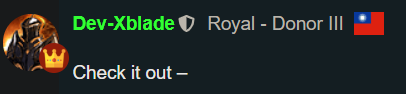
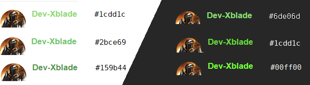

What is Thronepass?

Now at our Patreon site @ https://www.patreon.com/imperium42 ,
There are now 3 tiers that offer some extra community perks:
- Exclusive titles
- Exclusive flairs
- Exclusive name colors
- Discord, Forum, and Reddit perks
- Beta testing access auto-grant
- …Probably more things with the word “exclusive” later.
- Exclusive access to #off-topic

Consider this sorta like Discord Nitro: The average person may not care about the perks, but they can be sorta cool and make you stand out – and, at the same time, you’d be supporting the Imperium42 devs (we split the donations).
This is just a small thing, but hope it’s fun~ Just an extra win-win community perk. We’ve actually had our Patreon for a while, now, but it’s been mostly focused on Discord.
Perhaps I’ll add Reddit later, too!
Topic pinned for 3 days (just press “X” once to permanently close it).
How to Link Patreon<>FoL
- If you registered with the Patreon button, you’re ready.
- If you linked your Patreon “Associated Account” in your profile settings area in the social linking area, you’re ready.
- If you enabled 2FA, there seems to be a bug where you can no longer “link” accounts, so you’ll need to ensure your email must match between Patreon<>FoL.
- Patreon syncs immediately when you donate, if you did one of the things above. If you do it later, then it won’t resync immediately (like once/24hr?).
 Saw this from global banner?
Saw this from global banner?
EDIT: If anyone crazy enough wants some perks for a higher-level tier, let me know and I’ll add something. For now, I just added these 3.
EDIT 2: Color perks are only available on a dark theme. If you aren’t using a dark theme, please cease reading this and simply delete your account  /s
/s
EDIT 3: Added color perks to light theme  and mod/admin ones to light theme, too, while I was there. You know, for anyone that secretly loves light theme, but would never tell.
and mod/admin ones to light theme, too, while I was there. You know, for anyone that secretly loves light theme, but would never tell.
EDIT 4: Added color previews.